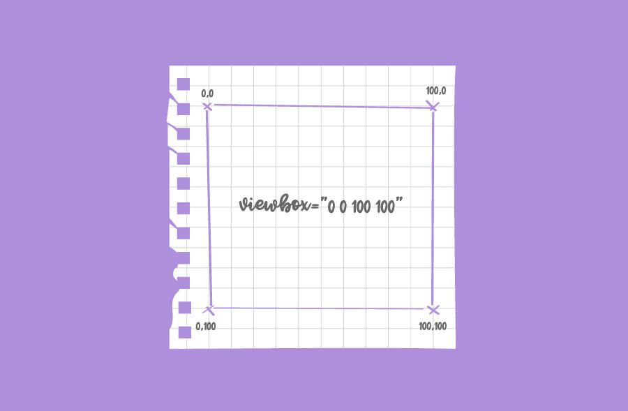
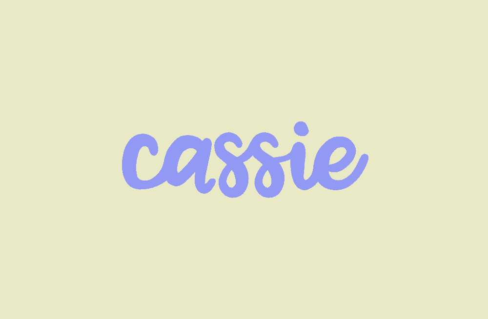
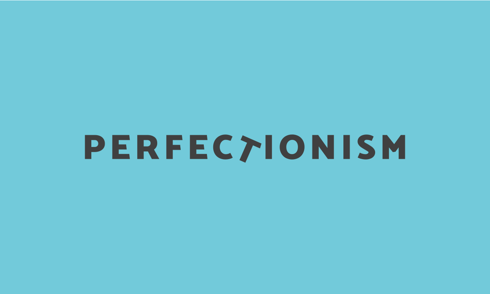
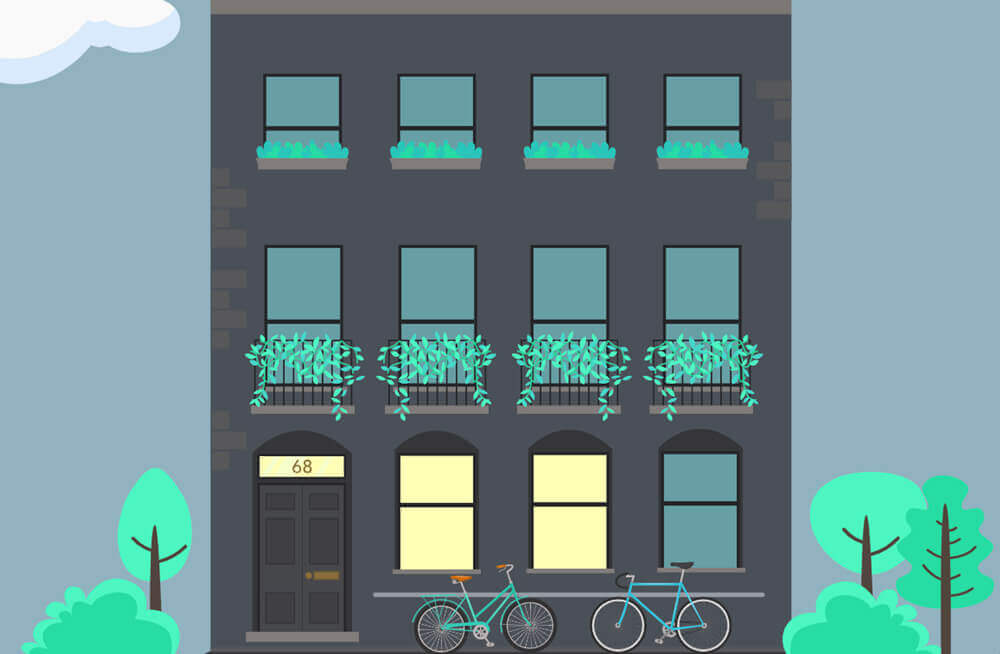
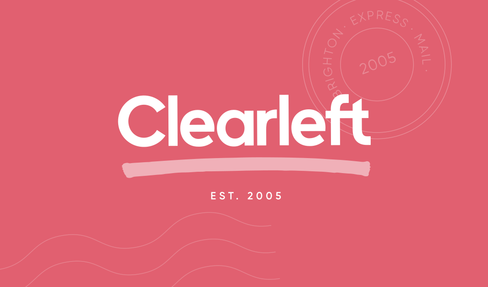

Writing.
My blog is where I think out loud. Expect mainly front-end development, with a sprinkling of self care and mental health.
I'm trying to be less precious about writing, so I've started a snippets and notes section over here, for smaller posts.
From my blog
-
My Experience of Modern Frontends
Modern Frontends
Gen Ashley - A conference built on lies and broken promises
-

Swipey image grids.
SVG isn't just useful for illustrative animation. It's hella handy for UI too.
-
My Typical Day
A typical day during a time that's anything but.
-
Making lil' me - part 2.
The long awaited part 2 - using values from mouse movement to animate an SVG.
-
Making lil' me - part 1.
How to get values from mouse movement and plug them into an animation.
-
Reading in the dark
Your productivity doesn't define your worth. A reminder to myself after a bout of depression.
-

Creating my logo animation
Creating my logo animation using SVG and GreenSock.
-

Shoes at last!
Fighting perfectionism, and finally getting my own blog started.
Articles from elsewhere
-
Motion Paths – Past, Present and Future
Exploring the upcoming CSS motion path module and the newly released GSAP3.
-

Earth day, API's and sunshine
Hooking into a solar panel API and creating an animated, SVG forest to celebrate Earth day.
-
The many ways to change an SVG fill on hover
An exploration into CSS and SVG filters for hover effects.
-

Static sites, slack and scrollytelling.
Since I started at Clearleft, I've had my eye on our timeline…